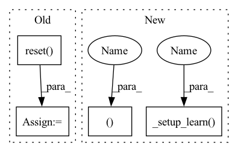

Pattern ID :19090

Before Change
evaluations = []
start_time = time.time()
eval_env = self._get_eval_env(eval_env)
obs = self.env.reset()
while self.num_timesteps < total_timesteps:
if callback is not None:
After Change
eval_env=None, eval_freq=-1, n_eval_episodes=5, tb_log_name="SAC",
reset_num_timesteps=True):
timesteps_since_eval, episode_num, evaluations, obs, eval_env = self._setup_learn(eval_env)
while self.num_timesteps < total_timesteps:
if callback is not None:
In pattern: SUPERPATTERN
Frequency: 3
Non-data size: 4
Instances
Fragment ID: 62201232
Project Name: dlr-rm/stable-baselines3
Commit Name: b5656531d1107317ff94423d57515b4f225568f2
Time: 2019-10-10
Author: antonin.raffin@dlr.de
File Name: torchy_baselines/sac/sac.py
M Class Name: SAC
N Class Name: SAC
M Method Name: learn(9)
N Method Name: learn(9)
M Parent Class: BaseRLModel
N Parent Class: BaseRLModel
M File Name: torchy_baselines/sac/sac.py
N File Name: torchy_baselines/sac/sac.py
M Start Line: 224
M End Line: 267
N Start Line: 225
N End Line: 264
'>
Before Change
evaluations = []
start_time = time.time()
eval_env = self._get_eval_env(eval_env)
obs = self.env.reset()
if self.action_noise is not None:
self.action_noise.reset()
while self.num_timesteps < total_timesteps:
After Change
def learn(self, total_timesteps, callback=None, log_interval=4,
eval_env=None, eval_freq=-1, n_eval_episodes=5, tb_log_name="TD3", reset_num_timesteps=True):
timesteps_since_eval, episode_num, evaluations, obs, eval_env = self._setup_learn(eval_env)
while self.num_timesteps < total_timesteps:
if callback is not None:
'>
Fragment ID: 62201231
Project Name: dlr-rm/stable-baselines3
Commit Name: b5656531d1107317ff94423d57515b4f225568f2
Time: 2019-10-10
Author: antonin.raffin@dlr.de
File Name: torchy_baselines/td3/td3.py
M Class Name: TD3
N Class Name: TD3
M Method Name: learn(9)
N Method Name: learn(9)
M Parent Class: BaseRLModel
N Parent Class: BaseRLModel
M File Name: torchy_baselines/td3/td3.py
N File Name: torchy_baselines/td3/td3.py
M Start Line: 191
M End Line: 236
N Start Line: 188
N End Line: 227
'>
Before Change
evaluations = []
start_time = time.time()
eval_env = self._get_eval_env(eval_env)
obs = self.env.reset()
while self.num_timesteps < total_timesteps:
self.fitnesses = []
After Change
def learn(self, total_timesteps, callback=None, log_interval=4,
eval_env=None, eval_freq=-1, n_eval_episodes=5, tb_log_name="CEMRL", reset_num_timesteps=True):
timesteps_since_eval, episode_num, evaluations, obs, eval_env = self._setup_learn(eval_env)
while self.num_timesteps < total_timesteps:
self.fitnesses = []
'>
Fragment ID: 62201230
Project Name: dlr-rm/stable-baselines3
Commit Name: b5656531d1107317ff94423d57515b4f225568f2
Time: 2019-10-10
Author: antonin.raffin@dlr.de
File Name: torchy_baselines/cem_rl/cem_rl.py
M Class Name: CEMRL
N Class Name: CEMRL
M Method Name: learn(9)
N Method Name: learn(9)
M Parent Class: TD3
N Parent Class: TD3
M File Name: torchy_baselines/cem_rl/cem_rl.py
N File Name: torchy_baselines/cem_rl/cem_rl.py
M Start Line: 61
M End Line: 130
N Start Line: 61
N End Line: 125